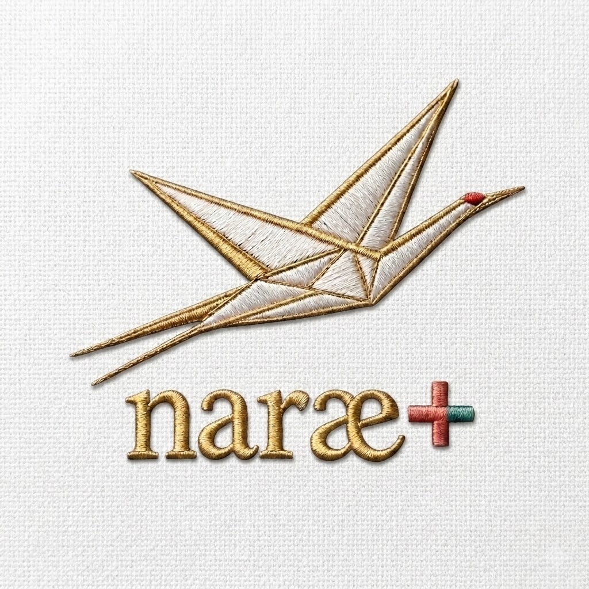

Community & Participation
Ways to Be Part
Whether you are seeking care, offering support, or exploring collaboration — there is a place for you in naræ.
At the center
The heart of naræ
naræ supports immigrant and culturally diverse women navigating breast and gynecologic cancers.
Every part of naræ is built around them.
A thoughtful foundation
Built with care, not haste
This work is shaped slowly, with attention to trust, cultural understanding, and the quality of each connection.
The goal is not to gather widely, but to build something sincere, steady, and lasting. It is meant to grow with integrity, not urgency.
naræ Roles
Who belongs here.
naræ Fellow Connect as a Fellow → →
→ Walk Beside Another → naræ Companion
naræ Steward Become a Steward → →

Support & Giving
How support can take shape.
Sometimes a woman's own healing deepens as she walks beside another.
Not all support is financial, but all of it matters.
Give to naræ
naræ International Foundation is a federally recognized 501(c)(3) nonprofit organization. Your gifts are tax-deductible as allowed by law.
Start the conversation
Whether you are seeking connection, offering support, or exploring collaboration — you are welcome to reach out.
[email protected]